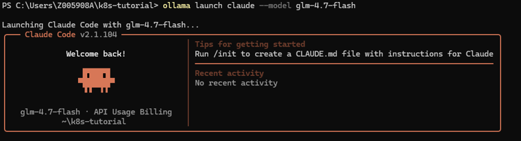

I ran Claude Code for free on my laptop. Here's how.
Claude Code is incredible. It reads your files, writes code, runs commands. All from your terminal.
The problem? It's expensive. $100/month minimum if you use it daily.
So I found a way to run it for free. Locally. On my Windows laptop. Here's the exact setup I used.

What you need
- A laptop with at least 8 GB RAM (16 GB+ is better)
- Windows, macOS, or Linux
- About 20 minutes
That's it.
Step 1 — Install Ollama
Ollama lets you run AI models locally. Think of it as the engine.
Go to ollama.com, download the installer for your OS, run it. Then verify it works:
ollama --versionStep 2 — Pull a model
This downloads the actual AI brain to your machine. You can check the full list of models here.
To check which models your machine can realistically handle, try CanIRun.ai — it gives you info on model requirements vs. your hardware.
For a lighter setup:
ollama pull glm-4.7-flashFor better results (needs 16 GB RAM):
ollama pull qwen2.5-coder:14bStep 3 — Install Claude Code
Windows CMD:
curl -fsSL https://claude.ai/install.cmd -o install.cmd && install.cmd && del install.cmdmacOS / Linux:
curl -fsSL https://claude.ai/install.sh | bashThen add Claude Code to your PATH so your terminal can find it. On Windows, run this in PowerShell:
[Environment]::SetEnvironmentVariable("PATH", $env:PATH + ";C:\Users\YOURUSERNAME\.local\bin", "User")Restart your terminal, then verify:
claude --versionStep 4 — Launch it
Once everything is installed, launch Claude Code against a local model:
ollama launch claude --model glm-4.7-flashYou're in. Ask it anything about your codebase.
Local vs cloud models
Here's what you need to keep in mind:
- Local models run on your machine. Fast, private, free. But smaller = dumber.
- Cloud models via Ollama are massive — up to 480B parameters — running on their servers. Still free. Much smarter. But your code leaves your machine.
To use a cloud-hosted model through the same workflow:
ollama launch claude --model qwen3-coder:480b-cloudSo for personal projects, I recommend using the cloud model.
For work code with sensitive data, stay local. Don't send company secrets to someone else's server.
My recommendation
If you just want a free Claude Code workflow on your laptop, start with Ollama plus a local model. It's simple, private, and good enough for a lot of coding tasks.
If your machine has more RAM, upgrade to a stronger coder model. If you need the smartest results and the code isn't sensitive, try a cloud-backed option through the same workflow.
The best part is that you keep the same terminal-first experience while choosing the model that fits your budget and privacy needs.